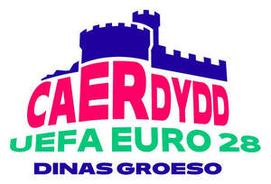

Trade Mark Journal No.2025/047 21 November 2025
UK00004293363 12 November 2025 (25,28,38,41)

- Class 25
- Clothing; shoes and footwear; headgear; shirts; knitted fabrics (garments); pullovers; sleeveless pullovers; T-shirts; vests; singlets; sleeveless singlets, frocks; skirts; underwear; bathing suits; bath robes; shorts; trousers; sweaters; bonnets; caps; hats; sashes for wear; scarves; shawls; peaked caps; tracksuits; sweatshirts; jackets, sports jackets, stadium jackets (chasubles); blazers; waterproof clothing; coats; uniforms; neckties; bandanas; wristbands; headbands; gloves; aprons; bibs, not of paper; pyjamas; play clothes for infants and children; stockings and socks; stocking suspenders; belts; suspenders and braces; sandals, thong sandals; athletic footwear, namely outdoor shoes, hiking shoes, basketball shoes, cross-training shoes, cycling shoes, indoor sports shoes, running and track-field shoes, flip-flops, football shoes (indoor and outdoor), football boots, canvas shoes, tennis shoes, urban sports shoes, sailing shoes, aerobic shoes; sports apparel namely fleece tops, jogging suits, knit sportswear, sport casual pants, polo shirts, sweatshirts, sweatpants, soccer style shirts, rugby-style shirts, socks, swimwear, tights and leg warmers, tracksuits, functional underwear, singlets, bra tops, leotards, snow suits, snow jackets, snow pants.
- Class 28
- Games and toys; coin-operated video games for game halls (arcade games); sports balls; playing balls; board games; tables for table football; dolls and plush toys; vehicles (toys); puzzles; balloons; inflatable toys; playing disks (pogs); playing cards; confetti; sport and gymnastics articles; football equipment, namely footballs, gloves, knee, elbow and shoulder pads, shin guards; football goals; sports bags and receptacles (adapted to the objects) to carry sports articles; party hats (toys); electronic games other than for use with a television set only; rubber or foam hands (toys); robots for entertainment (toys); appliances for gymnastics; kites; roller skates; scooters (toys); skateboards; scratch cards, for playing lottery games; small electronic games intended for use with a television set; video game apparatus; gamepads; hand- or voice-activated gamepads, steering wheels for video games and dancing mats for video games; electronic games with liquid crystal displays; game consoles; toys for pet animals.
- Class 38
- Telecommunication services; communication by mobile telephones; telex communication; communication via electronic computer terminals linked to telecommunication networks, databases and the Internet or via wireless electronic communication devices; telegraph communication; telephone communication; communication by facsimile transmission; radio call services; telephone or video conference services; television program broadcasting; broadcasting of cable television programs; radio program broadcasting; broadcasting and transmission of radio and television program on sport and sporting events; podcasting services; transmission of podcasts; news and news information agency services; message transmission services; rental of telephones, fax machines and telecommunication apparatus; transmission of commercial Internet pages on-line or via wireless electronic communication devices; transmission and broadcasting services for radio and television programs via the Internet or via any wireless electronic communication network; electronic message transmission; simultaneous broadcasting of film recordings and sound and video recordings; provision of access to telematics servers and to real-time conversation forums; computer-assisted message and image transmission; telecommunication via fiber optic networks; provision of access to a global computer network or of interactive communication technologies for access to private and commercial purchasing and ordering services; telecommunication of information (including web sites), computers and other data; transmission of information (including telematics sites) by telecommunication, of computer programs and other data; electronic mail services; providing access to the internet or to any wireless electronic communication network (telecommunication services); provision of connections for telecommunications with a global computer network (Internet) or with databases; provision of access to web sites offering digital music on the Internet via a global computer network or via wireless electronic communication devices; leasing access time to MP3 web sites on the Internet via a global computer network or via wireless electronic communication devices; leasing access time to a database server center (telecommunication services); leasing access time to a computer database (telecommunication services); transmission of digital music by telecommunications; on-line transmission of electronic publications; digital music transmission on the Internet or via any wireless electronic communication network; digital music transmission via MP3 Internet sites; simultaneous distribution and/or broadcasting of film recordings and sound and video recordings; simultaneous distribution and or broadcasting of interactive educational and entertainment products, interactive compact discs, CD-ROMs, computer programs and computer games; provision of access time to blackboards (information and notice boards), discussion forums (chatrooms) and blogs in real time via a global computer network (communication services); telecommunication services devoted to retailing by means of interactive communications with customers; telecommunication of multimedia; videotext and teletext transmission services; information transmission via communication satellite, micro-wave or by digital or analog electronic means; digital information transmission by cable, wire or fiber; information transmission via mobile telephones, telephones, facsimile transmission and telex; telecommunication services for receiving and exchanging information, messages, images and data; providing access to discussion groups on the Internet; providing access to internet platforms (also mobile internet) in the nature customized web pages featuring user-defined or specified information, personal profiles; provision of access to search engines to obtain data and information on global networks.
- Class 41
- Education; training; entertainment; operating lotteries and competitions; sport-related betting and game services; hospitality services (sport, entertainment); hospitality services, namely customer reception services (entertainment services), including provision of admission tickets for sporting or entertainment events; issuance of tickets, including on a global computer network (the Internet), for sporting, entertainment, cultural and educational events; sports tickets agency services; providing online information in the fields of sports and sports events from a computer database or the internet; entertainment services relating to sporting events; sporting and cultural activities; organization of events and sporting and cultural activities; organization of sporting competitions; organization of events in the field of football; operation of sports facilities; fun park services; health and fitness club services; video and audiovisual systems rental; rental of interactive educational and recreational products, of interactive educational and recreational compact disks in the field of sports, of CD-ROMs and computer games; production of interactive compact discs and of CD-ROMS [film and/or music production]; television and radio coverage of sports events; production services for radio and television programs and videotapes; simultaneous distribution of film recordings and sound and video recordings; production of podcasts; creation [writing] of podcasts; provision of entertainment via podcast; ticket reservation services and information for entertainment, sporting and cultural events; sports camps services; timing during sports events; organization of beauty contests; interactive entertainment; online betting and game services on the Internet or on any wireless electronic communication network; provision of services relating to raffles; information in the field of entertainment (including in the sports field), provided online from a computer database or via the Internet or via any wireless electronic communication network; electronic game services transmitted via the Internet or on mobile telephones; book publishing; on-line publishing of electronic books and newspapers; audio and video recording services; production of animated cartoons for the movies, production of animated cartoons for television; rental of sound and image recordings for entertainment; information in the field of education provided online from a computer database or via the Internet or via any wireless electronic communication network; translation services; photography services; rental of football stadiums; programming and/or rental of film recordings and of sound and video recordings; providing statistical and other information on sports performances, radio and television programming; provision of entertainment infrastructures, namely, VIP lounges and sky boxes both on and off site sports facilities for entertainment purposes.
Union des Associations Européennes de Football (UEFA)
Representative: Stobbs